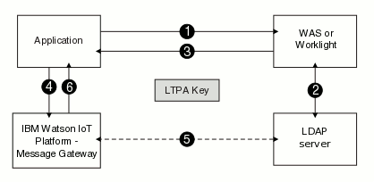

Lightweight Third Party Authentication (LTPA)
Lightweight Third Party Authentication (LTPA) is a single sign-on credential format.
With LTPA, the user authenticates with the first server that is accessed, by using a user name and password. After authenticating, the user receives an LTPA token, which is only valid for one session. The token is used to identify the user on other servers within the same domain name system, where the servers are configured to use LTPA. Therefore, the user enters a user name and password only once, and the user directory is accessed only once to verify the identity of that user.
LTPA can be used with WebSphere® Application Server and Worklight®. The servers must all use the same LDAP server for user authentication.

- The Eclipse Amlen client application is hosted on WebSphere Application Server or Worklight. The MQTT application uses a user name and password to authenticate with WebSphere Application Server or Worklight.
- WebSphere Application Server or Worklight validates the user name and password against the LDAP server and authenticates the user.
- The WebSphere Application Server or Worklight returns an LTPA token to the client application as a cookie.
- The client application retrieves the LTPA token from the cookie and uses the
token value as a password in the connection object of the MQTT client
configuration. The client application can forward the LTPA token to Eclipse Amlen server by using one of the
following options:
- Setting the user name in the connection object to
IMA_LTPA_TOKENand the password to the LTPA Token value that is returned by the WebSphere Application Server or Worklight server. - Sending the LTPA token cookie.
- Setting the user name in the connection object to
- Eclipse Amlen decrypts the LTPA token and retrieves the user ID and token expiration time. Eclipse Amlen validates the user and retrieves required information, such as group information, to check which actions the user is authorized to perform.
- Eclipse Amlen authenticates and authorizes the user.
- Configure LTPA on a supported server and export the LTPA key.
For more information about configuring LTPA in Worklight, see LTPA authenticator in the Worklight documentation.
For more information about configuring LTPA in WebSphere Application Server, see Configuring LTPA and working with keys in the WebSphere Application Server documentation.
- Configure Eclipse Amlen for
LTPA:
- Upload the LTPA key to Eclipse Amlen.
- Create an LTPA profile that specifies the LTPA key and password.
- Associate the LTPA profile with a security profile.
For more information about how to configure Eclipse Amlen for LTPA, see Configuring Lightweight Third Party Authentication.
- Configure client applications by using one of the following two
options:
- Create client applications that use user name and password authentication
where the user name is
IMA_LTPA_TOKEN, and the password is the LTPA token. - Configure your client application to use the LTPA token cookie. For more information, see Configuring your client application to use the LTPA token cookie.
- Create client applications that use user name and password authentication
where the user name is
Creating Worklight custom login modules for user authentication
You can use the following JavaScript™ code sample in a Worklight login module to retrieve the LTPA token:function wlCommonInit() {
// Common initialization code goes here
}
// Function to retrieve secret key
function getSecretData(){
var invocationData = {
adapter: "DummyAdapter",
procedure: "getSecretData",
parameters: []
};
WL.Client.invokeProcedure(invocationData, {
onSuccess: getSecretData_Callback,
});
}
// Callback to get LTPA token and userid from response
function getSecretData_Callback(response){
console.log("ltpaToken: " + response.invocationResult.LtpaToken );
ltpaToken = response.invocationResult.LtpaToken;
}Creating WebSphere Application Server servlets for user authentication
You can use the following Java™ code sample in a WebSphere Application Server liberty profile servlet to retrieve the LTPA token:/* Required IBM WebSphere imports */
import com.ibm.websphere.security.auth.WSSubject;
import com.ibm.websphere.security.cred.WSCredential;
import com.ibm.websphere.security.web.WebSecurityHelper;
import com.ibm.ws.webservices.engine.encoding.Base64;
/* Sample code to retrieve LTPA token on the IBM WebSphere Liberty Profile */
/* @return an LTPA token */
public String getSecurityTokenLiberty() {
Cookie cookie = null;
String token = null;
try {
cookie = WebSecurityHelper.getSSOCookieFromSSOToken();
if (cookie != null) {
token = cookie.getValue();
}
} catch (Exception e) {
token = "no token found";
e.printStackTrace();
}
return token;
}/* Required IBM WebSphere imports */
import com.ibm.websphere.security.auth.WSSubject;
import com.ibm.websphere.security.cred.WSCredential;
import com.ibm.websphere.security.web.WebSecurityHelper;
import com.ibm.ws.webservices.engine.encoding.Base64;
/* Sample code to retrieve LTPA token on the IBM WebSphere Application Server */
/* @return an LTPA token */
public String getSecurityTokenWAS() {
byte[] token = null;
try {
// Get current security subject
Subject security_subject = WSSubject.getRunAsSubject();
if (security_subject != null) {
// Get all security credentials from the security subject
Set security_credentials = security_subject.getPublicCredentials(WSCredential.class);
// Get the first credential
WSCredential security_credential = (WSCredential)security_credentials.iterator().next();
String user = (String) security_credential.getSecurityName();
if (user.equalsIgnoreCase("UNAUTHENTICATED")) {
return "UNAUTHENTICATED";
}
token = security_credential.getCredentialToken();
if (token == null) {
return "token is null";
}
String ltpaToken = Base64.encode(token);
return ltpaToken;
}
}
catch (Exception e){
e.printStackTrace();
}
return "token not found";
}Configuring your client application to use the LTPA token cookie
The LTPA token cookie domain must be in the same domain as the Eclipse Amlen server. When you use WebSphere Application Server or Worklight to generate the LTPA token cookie, the domain of the cookie is the same as the domain of the application server. If the domain of the application server is different to the domain of the Eclipse Amlen server, the LTPA token cookie cannot be sent to the Eclipse Amlen server. In this case, you must configure WebSphere Application Server or Worklight to generate the cookie with the same domain as the Eclipse Amlen server.
You can set the LTPA Token cookie domain programmatically from the JavaScript client application by using the following code sample:
function getCookie(c_name)
{
var c_value = document.cookie;
var c_start = c_value.indexOf(" " + c_name + "=");
if (c_start == -1)
{
c_start = c_value.indexOf(c_name + "=");
}
if (c_start == -1)
{
c_value = null;
}
else
{
c_start = c_value.indexOf("=", c_start) + 1;
var c_end = c_value.indexOf(";", c_start);
if (c_end == -1)
{
c_end = c_value.length;
}
c_value = unescape(c_value.substring(c_start,c_end));
}
return c_value;
}
function onLoad()
{
/*Obtain the LTPA Token cookie which generated from middleware server. */
var ltpaToken=getCookie("LtpaToken2");
/*Set the LTPA token with different domain*/
document.cookie = "LtpaToken2=" + escape(ltpaToken) +'; domain=austin.ibm.com; path=/';
}